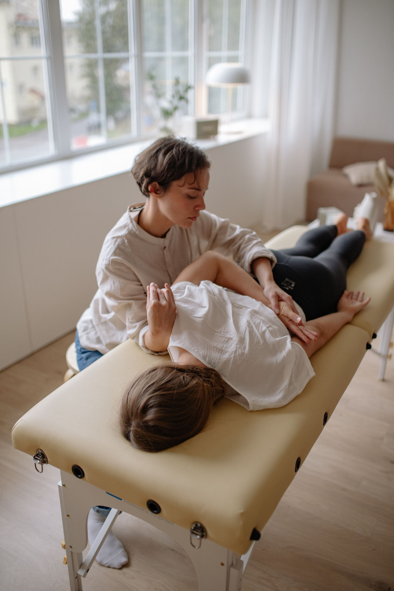

A masszázs nálunk nem wellness-kellék, hanem terápia:
a gyógytornával kéz a kézben jár. Válaszd ki a receptúrát, a többit
a masszőrre bízhatod.
Görgess: a kartoték vízszintesen lapozódik →

A kezelő · Mexikói útR / 01
Gyógymasszázs
50 perc · 13 500 Ft90 perc · 19 000 Ft
Svédmasszázs-fogásokon alapul, gyógyító célzattal. Kiváló kiegészítő
terápiája egy rehabilitációs programnak.
Javallat
izomcsomók, feszes izmok
sérülés utáni fájdalmak
stressz, alváspanaszok, fejfájás
keringésfokozás, regeneráció
Szakember · Szegedi Botond
R / 02
Relaxáló masszázs
50 perc · 13 500 Ft
Teljes testet ellazító, megnyugtató forma: finom érintő mozdulatok,
simítások, mély relaxáció. Annak, aki nem szereti a határozott, gyúró
fogásokat.
Javallat
stresszkezelés, mentális egyensúly
alvásminőség javítása
emésztési folyamatok támogatása
Szakember · Szegedi Botond
R / 03
Nyirokmasszázs
90 perc · teljes test · 23 000 Ft50 perc · testrész · 15 000 Ft
Gyengéd, lassú, pumpáló nyirokdrenázs: serkenti a nyirokrendszer
működését. Fájdalmat nem lehet érezni. A kezelés előtti és utáni napokban
napi 2-3 liter folyadék ajánlott.
Javallat
ödéma elvezetése
immunrendszer-támogatás
nyugtató, fájdalomcsillapító hatás
Szakember · Szegedi Botond
R / 04
Cellulit masszázs
30 perc · 12 000 Ft50 perc · 17 000 Ftcsak nőknek · kúraszerűen, heti 2-3 alkalom
Erőteljes dörzsölő, gyúró mozdulatok: fokozzák a vér- és
nyirokkeringést, oldják a letapadásokat, javítják a bőr szerkezetét.
Nem fájdalommentes, de hatékony, és nem helyettesíti az egészséges
életmódot.
Javallat
narancsbőr: comb, fenék, csípő, has
diéta és edzésterv kiegészítése
ülőmunka, hormonális változások
Szakember · Szegedi Botond
R / 05
Kismama masszázs
50 perc · 12 000 Fta 12. héttől a várandósság végéig
Finom, biztonságos, a várandós test igényeire hangolt kezelés:
csökkenti a hát-, derék- és csípőtáji fájdalmakat, oldja a stresszt,
támogatja a nyugodtabb alvást.
Nem végezhető
az 1. trimeszterben
veszélyeztetett terhességnél*
vérzés vagy hasi görcsök esetén
magas vérnyomásnál
Szakember · Vas Luca · *orvosi igazolással egyeztethető
R / 06
Sportmasszázs
50 perc · 15 000 FtReitter · II. kötet
Svédmasszázs-fogásokra épül, de jóval erőteljesebb. Nem csak sportolóknak:
fájdalomcsillapítás, keringésjavítás, terhelhetőbb izmok, gyorsabb
regeneráció.
Javallat
edzésterhelés, versenyidőszak
izomfeszülés, triggerpontok
teljesítményfokozás
Helyszín · Reitter Ferenc u. 48.
R / !
Mikor nem masszírozunk?
Minden masszázs előtt átbeszéljük az egészségi állapotodat. Általános
ellenjavallatok:
Ellenjavallatok
fertőző, lázas megbetegedés
nyílt seb, bőrbetegség
tumoros megbetegedés
akut gyulladásos folyamatok
trombózis, súlyos érszűkület
A nyirokmasszázsnak külön, részletes ellenjavallat-listája van:
kezelés előtt minden esetben egyeztetünk.